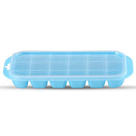

I want to share with you which is very necessary tip. So let's start it, I know more or less everybody feel headache when we catch fever or stay anytypes of tension. We are taking different medicine for cureing. However, we will not take the medicine from now on, but we will take home-treat. By use....
You can not belive that how ice can cure headache if you not use it. To be honest,today in the afternoon i was feeling too much headache so i used a piece of ice on my forehead immediatly my headache has subsided Thats why, if you use it plz collect ice in this way
and use a piece of ice in your forehead. Thank you for enter my page...